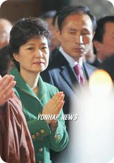
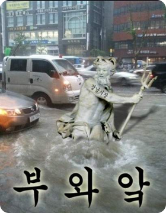
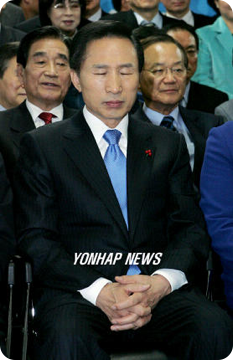

오사카출생
본명"스키야마 아키히로"**
일본 "오사카"
본명 "스키야마 아키히로"
졸업전에 현대입사
건축법 위반
노조설림 방해
수뢰의혹
근로기준법위반
선거법위반 벌금400만
범인도피 벌금 300만
하늘을 우러러 한점 부끄럼 없다.
BUT 들통타 15대 국회의원 사퇴
BBK는 내가 설립했다 발언 동영상 유포
이건 졸라 많고 복잡함. 나꼼수 1,2,3 화에서 쉽고 재미있게 설명했으니 참조.
고승덕이 대변하다가 좋던이미지 골로감.
당시 BBK 보도, 파해쳤던 거의 모든사람들 고발
BUT 다 무죄
(17대 국회의원 정봉주는 아직 진행중)
법무법인 "바른" 대두됨
747공약
반값등록금
주가 3000
국제과학비즈니스벨트 구축
세종시, 신공항,영남권신공학
4대강으로 바뀜
세금 22조 투입
포항 동지상고 친구들 잔치
4대강 살리기라고 주장
재단법인 청계 설림
331억 출연
이명박 친인척 운영,소유
청계재단의 첫 업무
이명박 채무 갚아줌;;;
기부재단 만들어서 아낀세금이 실제 기부한 장학금보다 많음
숭례문 복원 성금제안
여론 안좋자 "늬들이 오해"
사실 이사건은 이명박 잘못아님.
그냥 하늘의 경고? 예고?ㅋㅋ
위키리크스
인수위원장 이경숙
"프렌들리? 후렌들리!! 오렌지? 오우뤠인지!!"
영어잘하면 군대 빼준다 논란.

미네르바 사태
미디어 법 개정논란
이런문제로 소송건게 워낙많아서..ㅋ
언론조작
최시중
이명박 형친구
최시중 양아들 뇌물수억수수
국회의원들에게 혼날때 갑자기 질질짜면서
자신이 과거 언론민주화를 위해서 싸우고 구속되었다고 발언
언론민주주의가 아니라 뇌물로 200만원 받고 구속됨
1972년 사건으로 지금 가치로 2억원
동아일보 기자 재직당시 전두환과 같이 놀러다님
KBS 전 사장 정연주 에 대해 불법의혹을 확신하며 수차례 발표
KBS 정연주 사장 해임
YTN 사장으로 명박이 대선후보 시절 언론특보 구본홍 임명
MBC 김재철 사장임명
나꼼수 폐지 움직임.(이건 의혹만)
방송의 취소, 연기,검열,탄압
추적 60분 <사업권 회수논란, 4대강의 쟁점은?>
PD수첨 <4대강, 6M수심의 비밀>
PD수첩 방송 금지 가처분 신청냈다가 기각됨
PD수첩 <광우병>편 PD들 31개월동안 쑤많은 소환조사
YTN 사장 출근 저지한 노조원들 체포
엠바고 지키지 않은 언론 징계
인터넷알바
취재방해
언론자유지수 31위 >>> 69위
진보계열??? 연애인들 출연금지, 교체
MBC, KBS 제작거부 파업 돌입 2012년 2월
노무현 대통령 조롱하는 코알라 합성사진 만들어 배포
더러운 댓글부대
‘노무현 자살 관련 좌파 제압 논리 개발 문건’ 확인
연예인 블랙리스트, 화이트리스트 운용
정책
김대중, 노무현 정부떄는 방역이 제2의 국방이라며 신속하고도 철저하게 대처해서 조기차단했음
침출수를 퇴비로. ㅋㅋ
느끼는중인 키위아저씨(전주완산을)
고기값 폭등
거의 시동켤줄알면 되는 수준
항간의 추측으론
직후 위기 7단계로 격상
각국은 국민들에게 일본여행 자제요청
우리나라는...
농산물 수입
해산물 수입
차기 호위함 건조사업 - FFK 예산 삭감,
전역 방공함 개발사업 - KD3 개량사업 - 전액 삭감,
추가 KD3 건조사업 취소,
KD-2 개량사업 취소,
조기경보기 도입 예산 삭감 - 사업진척도 느려짐,
기뢰전헬기 도입사업 예산삭감,
차세대 지뢰탐지장비 도입사업 예산 전액 삭감,
전차운반 차량 추가도입사업 전액삭감,
F-4, F-5 300여대 대체할 KFX 전투기 개발 연구비 전액 삭감,
구형 공격헬기 대체할 한국형 공격헬기 개발 연구비 전액 삭감,
KD-1 VLS(수직발사기) 개량사업 및 국산 대함미슬 도입사업비 15% 삭감,
방산업체 지원금 삭감 및 KM-SAM(국산 중거리 방공미슬 시스템-철매사업) 도입수량/예산 삭감,
적국 인공위성 감시를 위한 우주군 창설 전면 취소,
위성감시용 레이더 시스템 도입사업 유보,
군용 수송차량 개량사업 전액 집행 유보,
K-11 복합자동화기 예산 삭감,
XK2전차, K1A1전차 예산 삭감 및 전체 도입수량 감소,
K-21 보병전투차량 예산삭감, 도입수량 감소,
전방 GOP, GP초소 개량사업삭감 및 기존 벙커건설업체탈락 → 벙커건설경력없는 중견기업으로
군비축물자 물류기지 건설 취소,
신형 방탄모, 전투복, 전투화 구입물량 삭감,
구형 수통, 반합 개량 사업 축소, 폐지,
소총 개량 사업 전액 삭감.
노후화된 참수리급 고속정 대채할 400톤급 검독수리 고속함 사업 예산 삭감
k-9 자주포 도입 예산 삭감 했다가 이번 연평도 일터지자 증원 한다고 발표
해군 위치추적 신형 구명조끼 도입 예산 전액 삭감(천안함 사건으로 도입한다고 지랄떨더니)
백령도 포대증원 예산 전액 삭감(천안함 사건으로 서북도서 전력보강 해야한다고 드립치더니 전액 삭감)
노무현 대통령이 미국과 단판 처서 들여오기로한 글로벌호크를 명박이가 필요없다며 발로차버림
총 22조 삭감
4대강 2012년까지 22조 2청억 투입예정
(2009년 기준)
참여정부(노무현)의 국방개혁 2020 과비교해보면
누가 빨갱이, 종북집단인지 알수 있음
뉴욕타임즈 "4대강은 재앙"
독일 운하 세계석학 "4대강재앙"
독일학자 "MB" 유명해질것
UN에 친환경 인증받으려 하다가 거절당함
총예산 22조
수자원공사 이자비용 연간 2조원
유지비 연간 2천4백억
지류,지천 사업비 19조
4대강 공사로 인한 홍수피해
구미단수사태
60만인구가 똥을 못쌈
4대강 공사 불법폐기물 매립허용
무리한 일정으로 노동자 인명피해
낙동강 보앞에 26m 수심 구덩이 발견
이건 원래 이때까지 있는게 맞긴했으나 사업이 진행중이었고 여전히 몰수할 재산들이 많아 기간연장하자는 여론이 많았음
하지만 쿨하게 폐지
전세값 폭등
국가부체 1800조원
생필품 물가 폭등
고환율정책
부의 대기업 집중
소비자권장가 폐지
북에게
“천안함 미안하다는 시늉이라도 해달라
이쪽에서 보면 미안해하는 포즈만이라도..”
북한에서 이렇게 자기들에게 애걸복걸 했다고 터뜨림
이명박 정부는 우리의 의도를 왜곡한 해석이라고 논평
의혹이 많은 문제.
정부주장이 사실인지 아닌지 모르지만 좀더 투명하게 밝힐 필요가 있음.
북한과의 교전에서 진적이 없음.
동시에 관계도 좋았음
(오사카 출생)
일왕에게 "천황" 호칭, 깍듯이 고개숙여 인사
독도문제
"지금은 곤란하니 발표 조금만 기다려달라"
"정신대와 강제징용 용서"
일본 공식문서에 서약
이상득 왈 "내동생은 뼈속까지 친일,친미이다!!"
위키리크스
2007년 10월 미국,중국,일본,러시아 순방후 지도자들을 만날것이라 발표만.
오직 발표.
조지부시와 면담일정 공개
but 백악관 공식부인
FTA 굴욕협상
미국 자동차 공장에서 연설
몽골서 외교 치욕
아.. 했구나.. 사건
위키리크스
그 댓가로 부시 골프카 운전하는 영광을 얻음.
(경찰추산 5천명)
명박산성
오잔디 탄생 일조
오세이돈으로 업글
무상급식 대신 무상급수

경찰의 과잉진압
MBC 100분 토론에서 민변 변호사가 밝힘
간단하게는 서로 의견대립하다가 청와대에서 노대통령 주변 인물들 구속수사하겠다고 협박
노대통령이 사과함.
자신의 임기동안의 자신기록들에 한해서 열람할 권리 요구
분양소 강제철거
시민분양소 운영하는 사람들 강제연행 구속수감
노무현 영결식 장면에 수차례 실소
노제가 끝난 직후 천막 강제철거
실수라고 했지만 구라로 판명
BUT 일본 "오사카" 출생
본명 "쓰키야마 아키히로)
발표한 것보다 3억6천만 달러 더 준것으로 국정감사에서 밝혀짐
대부분 노무현 정부때 결정되어있던것
강제력 없는 양해각서만 체결하고 언론에 대서특필.
당선인 신분일때 이라크쿠르드 자치정부랑 석유시추계약
하지만 물이랑 가스 조금나와서 실폐
CNK 다이아 광산 사건
자기는 돌솥밥.
인터뷰하러온 손님인 김승현 그냥 공기밥
날계란은 하나 얹어주시는 은혜.
"이런일이 올줄알았다. 정치권 반성해야 한다"
고 훈수를 둬주심.
(MB요정설)
MB로 하나되는 유대감 형성
아내 김윤옥
발꼬락 다이아 사건
이거 진~~짜 웃긴사건임.ㅋㅋ
당시 현직 서울시장 부인이 세금 안내려고 발꼬락에 다이아반지를 끼고 들어오다 세관에 걸림
상상만해도 웃음을 주시는 큰 은혜.
정말 잘어울리는 부부십니다.ㅋㅋ
백혈병 무균실 마스크 비착용
김재홍
(사촌오빠)
KT&G 이사장
제일저축은행 구명로비,인사청탈
4억2천만원 수수
황태섭
(둘째언니 남편)
4억수수
황명섭
(황명섭동생)
신기옥
(셋째언니 남편)
김재정
(남동생)
김옥희
(사촌언니)
각하부인의 사촌오빠 김재홍 서일대학 분쟁
이상은
전중화
(사위)
이상득
장록속 7억원
수억 차명계좌 몇개씩 발견
여비서 8억
아들 이지형
박배수
(보좌관)
박영준
(전보좌관)
아들 이시형
MB사촌형과 그아들 4대강 건설사업권 미끼로 3억원 수뢰
누락많음
최시중
신재민 문화체육관광부 차관 수십억원 뇌물
김두우
전 청와대 홍보수석
은진수
전 감사원 감사위원 저축은행 로비사건
강경호
코레일 사장
박희태
(국회의장)
추부길
전 청와대 홍보기획비서관
천신일 세중나모 회장
배건기
청와대 감찰팀
최영
강원랜드
장수만
방위사업청장
청와대 행정관 구씨
윤석민
(전 보좌관)
김해수
홍상표
박영준
누락 많음
김효재
(청와대 정무수석)
정기택
(팬클럽회장)
윤진식
정진석
(청와대 정무수석)
음성직
노무현 대비 예산 16배**
ㅋㅋㅋㅋㅋ

완전웃김..ㅋㅋㅋㅋㅋ
가끔 무도보다 재밌는 정도.ㅋㅋ
근데 좀 존경심도 드는게 사실.
무릇 존경받는 유명인 이라면 이정도 즐거운 일화는 숙명 같은것이지요.ㅎㅎ
{kind=link}